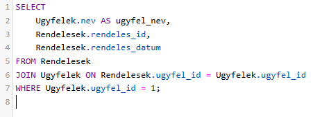
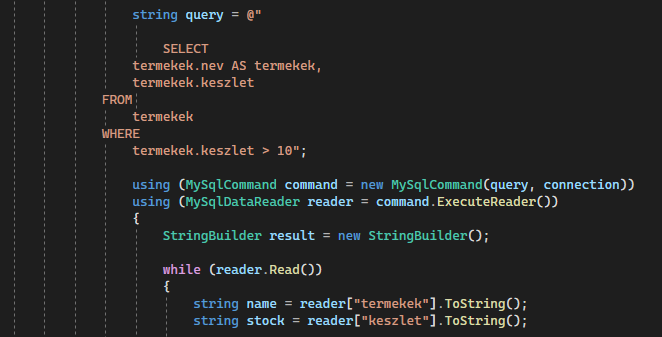

Bipoláris tranzistoros erősítő kapcsolási rajza látható.
Önreflexió
Az elektronika órák során sokat tanultam az áromkörök működéséről, bér eleinte nehézséget okozott megérteni az alapelveket.
Mikrovezérlő programozás.
Parkolóradar szimulációs környezetben.
Önreflexió
A mikrovezérlő programozás során megtanultam, hogy a részletek fontosak, és minden apró hiba komoly hatással lehet a projekt működésére.
Második Félév
Programozás Alapjai
Kő papír olló és egy szám kitalálós programok részletei.
Önreflexió
A programozás Alapjai tantárgy során jelentős fejlődést tapasztaltam a logikai gondolkodásomban, megtanultam hogy a kód megírása mellett a problémák elemzése és a megoldási lépések is kolcsfontosságúak.
Digitális Áramkörök
Igazságtáblázat és egy falstadban készült logikai kapcsolási rajz.
Önreflexió
A digitális Áramkörök órák alkalmával sokat tanultam a logikai kapukról és a bináris számrendszerről. Kezdetben bonyolultnak tűntek, de idővel a gyakorlati feladatok sokat segítettek.
12. évfolyam
Első Félév
Adatbáziskezelés Alapjai

Szállítási napló programja.
Önreflexió
Az Adatbáziskezelés tantárgy során elsajátítottam az adatbázis-tervezés és az SQL-lekérdezések alapjait. Bár kezdetben nehézséget okoztak a nehezebb relációk és lekérdezések, a sok gyakorlás segített ezek leküzdésében.
Hálózatkezelés
Hálózati alaprajz Cisco Packet Tracer programban.
Önreflexió
A tantárgy során sokat tanultam a hálózatok működéséről és konfigurálásáról. A gyakorlati feladatok segítettek az elméleti tudás alkalmazásában, különösen a hálózattervezés és hibakeresés terén. Bár a konfiguráció és a biztonsági beállítások kihívást jelentettek, ezek fejlesztették a problémamegoldó készségemet.
Második Félév
PLC programozás
Közlekedési lámpa programja.
Önreflexió
A PLC programozás során rengeteget tanultam az ipari automatizálásról. Kezdetben kihívást jelentett a logikai gondolkodás, de ez idővel javult. Bár még van mit fejlesztenem magamon, úgy érzem, ez a tantárgy erős alapot adott, és motivált a további tanulásra az ipari automatizálás területén.
Számítógépes szimuláció
Nyáklap.
Önreflexió
A számítógépes szimuláció órákon megtanultam, hogyan lehet digitálisan modellezni valós folyamatokat. Lenyűgöző volt látni, hogyan alkalmazzák a szimulációt mérnöki és tudományos területeken.
13. évfolyam
Első Félév
Munkavállalói idegen nyelven
Angol önéletrajz.
Önreflexió
Az önéletrajz írása során igyekeztem kiemelni a legfontosabb szakmai tapasztalataimat, de rájöttem, hogy a jövőben érdemes lenne jobban hangsúlyozni a személyes értékeimet és motivációimat is.
IoT
A képeken egy hő és páratartalom mérő, valamint annak Arduino IDE programban elkészült kódja.
Önreflexió
Az IoT tantárgy alkalmával megtanultam, hogy az Internet of Things nemcsak technológiai fejlődést jelent, hanem jelentős hatással van a mindennapi életünkre is. A tantárgy rávilágított arra hogy az IoT hogyan növelii a hatékonyságot és a fenntarthatóságot, például az okosotthonokban és az iparban.
Második Félév
Programfejlesztés

Windows Formos program.
Önreflexió
A programfejlesztés tantárgy során rengeteg új ismeretet sajátítottam el, amelyek segítettek megérteni a szoftverfejlesztés alapjait és a programozás logikáját. A tantárgy nemcsak technikai tudást adott, hanem fejlesztette a problémamegoldó készségemet és a rendszerszemléletemet is.
Ezen tantárgy során nemcsak technikai ismeretekkel gazdagodtam, hanem segített abban is, hogy jobban megértsem a modern ipar működését és a technika jövőbeli lehetőségeit.
Önreflexió
11. Évfolyam számomra nagyon nehezen kezdődött, a sok új tantárgy elsőre nagyon nehezeknek bizonyultak, viszont idővel sikerült elsajátítanom a tantárgyak minden kis részletét.
12. Évfolyam már egy sokkal gyakorlat orientáltabb tanév volt személyem szerint, ami nekem jobban is tetszett, mert itt már nem csak elméletben, hanem gyakorlatban is láthattam sok dolgot, ilyen volt például amikor PLC-vel programoztunk, vagy mikor NYÁK-ot terveztem.
13. Évfolyam egy már talán kicsit nyugodtabb tanév volt, mivel már az érettségi nagy részén túl voltam, ezért egy nagyobb teher már lekerült a vállamról, viszont a sok feladat és a Portfólió miatt nagyon intenzív év volt, ahol feszített tempóban kellett dolgozni.